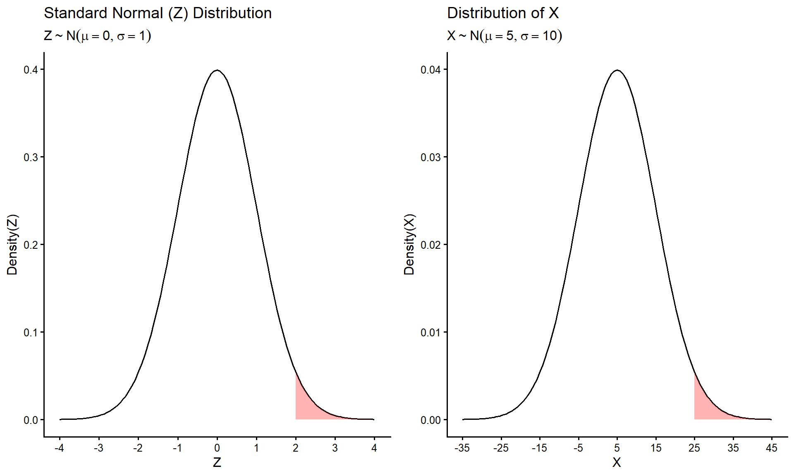
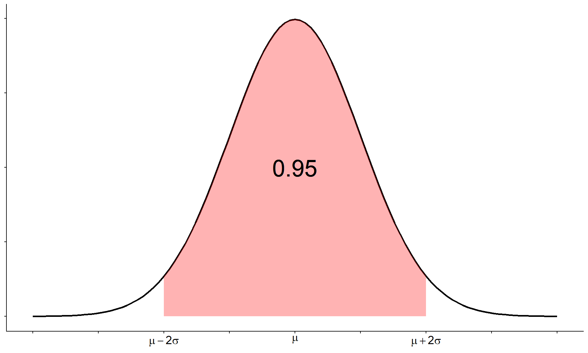
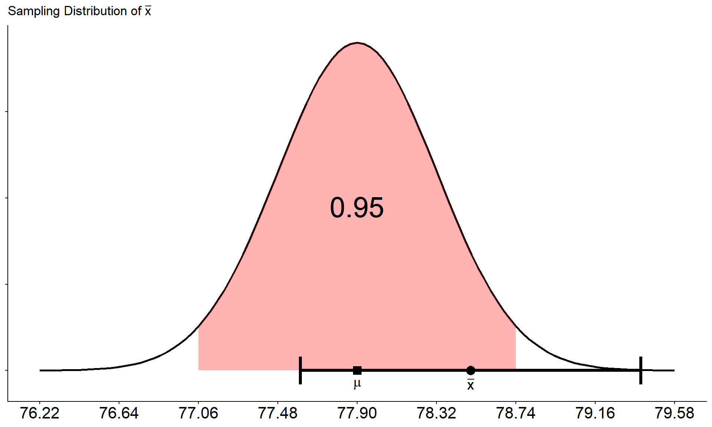

Week 8 Notes
STAT 251 Section 01
Sampling distributions
Two polls, two answers
Two polling firms each survey a random sample of 1,000 voters in the same state, in the same week. Poll A finds that \(\hat{p} = 0.52\) of voters support a ballot measure; Poll B finds \(\hat{p} = 0.49\). Is one of the polls wrong?
Not necessarily. Different random samples contain different people, so they give different values of \(\hat{p}\). This is the sampling variation we met in Week 6. Now imagine 1,000 firms each polling 1,000 voters: their 1,000 values of \(\hat{p}\) would pile up around the true proportion \(p\), and the shape of that pile tells us how far any one poll is likely to be from the truth. This week is about that pile.
Three distributions
A statistic computed from a random sample or a randomized experiment is a random variable: its value depends on which units chance put in the sample, so it has a probability distribution of its own. We now have three distributions to keep apart:
- The population distribution is the probability distribution of a single observation \(X\). Its properties are described by parameters such as \(\mu\), \(\sigma\) and \(p\), which we usually do not know.
- The data distribution is the distribution of the \(n\) observations in our one sample, the histogram of our data. Its properties are described by statistics such as \(\bar{x}\), \(s\) and \(\hat{p}\).
- The sampling distribution is the probability distribution of a statistic, such as \(\bar{x}\) or \(\hat{p}\), over all possible samples of the same size \(n\) from the same population. It tells us how close an estimate is likely to be to the parameter it estimates.
Building a sampling distribution by hand
For a discrete population and a small sample we can find a sampling distribution exactly, with the probability rules from Week 6:
- List every possible sample of size \(n\) and compute the statistic for each.
- Find the probability of each sample. When the observations are independent, multiply.
- Add up the probabilities of the samples that give the same value of the statistic.
Example: a spinner
A spinner lands on 1, 2 or 3, each with probability 1/3, so the population has \(\mu = 2\). Spin it twice and record the mean of the two spins, \(\bar{x}\). There are \(3 \times 3 = 9\) equally likely samples, and order matters: (1, 2) and (2, 1) are different samples.
| \(\bar{x}\) | Samples giving it | \(P(\bar{x})\) |
|---|---|---|
| 1 | (1,1) | 1/9 |
| 1.5 | (1,2), (2,1) | 2/9 |
| 2 | (1,3), (2,2), (3,1) | 3/9 |
| 2.5 | (2,3), (3,2) | 2/9 |
| 3 | (3,3) | 1/9 |

Compare the population (left) with the sampling distribution of \(\bar{x}\) (right):
- Same center. Both have mean 2.
- Smaller spread. One spin has \(\sigma = 0.82\); the mean of two spins has \(\sigma_{\bar{x}} = 0.58\), which is exactly \(0.82/\sqrt{2}\).
- New shape. The population is flat; the sampling distribution is already peaked in the middle, because a mean of 1 or 3 needs both spins to be extreme.
Example: Coho salmon
Let \(X\) be the number of Coho salmon a fly fisherman catches in an afternoon on the Clearwater River, with this (hypothetical) population distribution:
| \(x\) | \(P(x)\) |
|---|---|
| 0 | 0.589 |
| 1 | 0.232 |
| 2 | 0.179 |
Its mean is \(\mu = 0(0.589) + 1(0.232) + 2(0.179) = 0.59\) fish and its standard deviation is \(\sigma = 0.775\). Now find the sampling distribution of \(\bar{x}\), the mean catch over a random sample of \(n = 3\) afternoons. This time the outcomes are not equally likely, so each sample’s probability comes from the multiplication rule. There are \(3 \times 3 \times 3 = 27\) possible samples:
| \(\bar{x}\) | Samples giving it | Probability | \(P(\bar{x})\) |
|---|---|---|---|
| 0 | (0,0,0) = \(\color{red}{1}\) | \(0.589^3\) | \(\color{red}{0.204}\) |
| 1/3 | (1,0,0), (0,1,0), (0,0,1) = \(\color{red}{3}\) | \(3(0.589^2 \times 0.232)\) | \(\color{red}{0.241}\) |
| 2/3 | (1,1,0), (1,0,1), (0,1,1), (2,0,0), (0,2,0), (0,0,2) = \(\color{red}{6}\) | \(3(0.232^2 \times 0.589) + 3(0.589^2 \times 0.179)\) | \(\color{red}{0.281}\) |
| 1 | (1,1,1), (2,1,0), (2,0,1), (0,2,1), (1,2,0), (1,0,2), (0,1,2) = \(\color{red}{7}\) | \(0.232^3 + 6(0.589 \times 0.232 \times 0.179)\) | \(\color{red}{0.159}\) |
| 4/3 | (2,1,1), (1,2,1), (1,1,2), (2,2,0), (2,0,2), (0,2,2) = \(\color{red}{6}\) | \(3(0.232^2 \times 0.179) + 3(0.179^2 \times 0.589)\) | \(\color{red}{0.086}\) |
| 5/3 | (1,2,2), (2,1,2), (2,2,1) = \(\color{red}{3}\) | \(3(0.179^2 \times 0.232)\) | \(\color{red}{0.022}\) |
| 2 | (2,2,2) = \(\color{red}{1}\) | \(0.179^3\) | \(\color{red}{0.006}\) |
The counts in red add to 27 and the probabilities add to 1. Once again:
- the mean of the sampling distribution is \(\mu_{\bar{x}} = \sum \bar{x}\, P(\bar{x}) = 0.59\), the same as \(\mu\);
- its standard deviation is \(\sigma_{\bar{x}} = 0.447\), which is exactly \(\sigma/\sqrt{n} = 0.775/\sqrt{3}\).
Center and spread of a sampling distribution
Those two examples are not coincidences. For a random sample of size \(n\) from a population with mean \(\mu\) and standard deviation \(\sigma\):
- The sample mean \(\bar{x}\) has mean \(\mu_{\bar{x}} = \mu\): it is centered at the parameter it estimates. Its standard deviation is \[\sigma_{\bar{x}} = \frac{\sigma}{\sqrt{n}}\] the standard error of the mean, the same standard error we met in Week 6.
A sample proportion \(\hat{p}\) is a sample mean too. Code each observation as a Bernoulli trial, 1 for a success and 0 for a failure; then \(\hat{p}\) is the mean of the 0s and 1s, the count of successes \(X \sim \text{Binom}(n, p)\) divided by \(n\). A Bernoulli population has mean \(p\) and standard deviation \(\sqrt{p(1 - p)}\), so:
- The sample proportion \(\hat{p} = X/n\) has mean \(\mu_{\hat{p}} = p\) and standard error \[\sigma_{\hat{p}} = \sqrt{\frac{p(1 - p)}{n}}\]
Both statistics are unbiased (centered at the parameter), and both standard errors shrink like \(1/\sqrt{n}\).
The data: Spotify songs
Spotify and YouTube statistics for the top 10 Spotify songs of each of 2,079 popular artists were collected in February 2023. A song credited to several artists appears once for each of them, so we count each song once, which leaves 18,860 different songs. Our variable is
- \(X\) = the length of a song, in minutes.
| Track | Artist | Minutes |
|---|---|---|
| Feel Good Inc. | Gorillaz | 3.71 |
| Rhinestone Eyes | Gorillaz | 3.34 |
| New Gold (feat. Tame Impala and Bootie Brown) | Gorillaz | 3.59 |
| On Melancholy Hill | Gorillaz | 3.90 |
| Clint Eastwood | Gorillaz | 5.68 |
| … | … | … |

Most songs run between about 2.5 and 5 minutes, but the right tail is long: 41 songs (mostly non-stop remix medleys and sleep sounds) are over 10 minutes, the longest 78 minutes. Those are left off the plot so the rest is visible. Treating all 18,860 songs as the population, \(\mu = 3.71\) minutes and \(\sigma = 1.51\) minutes.
Example: standard error and \(n\)
Draw a random sample of \(n\) songs and average their lengths to get \(\bar{x}\). Every new sample gives a different \(\bar{x}\), and the standard error \(\sigma_{\bar{x}}\) measures how much \(\bar{x}\) varies from sample to sample.
- For \(n = 20\): \(\sigma_{\bar{x}} = 1.51/\sqrt{20} \approx 0.34\) minutes.
- For \(n = 80\): \(\sigma_{\bar{x}} = 1.51/\sqrt{80} \approx 0.17\) minutes.
A single song is typically about 1.5 minutes from the mean; the average of 20 songs is typically only about a third of a minute from it. And because \(n\) sits under a square root, making the sample 4 times larger only cuts the standard error in half (\(\sqrt{4} = 2\)).
The central limit theorem
The formulas above give the center and spread of a sampling distribution. The central limit theorem (CLT) gives its shape, and it is one of the most famous results in all of probability.
Averaging a skewed variable
The data: waiting for a goal
The 2022 World Cup produced 172 goals in its 64 matches, 2.69 goals per 90-minute match. If goals arrive at that rate, independently of one another, then
- \(X\) = minutes until the next goal
has mean \(\mu = 90/2.69 \approx 33.5\) minutes and, for this kind of waiting time, standard deviation \(\sigma \approx 33.5\) minutes as well. These waits are simulated at the World Cup rate, not recorded from matches. Here are the first five:
| Wait | Minutes |
|---|---|
| 1 | 1.6 |
| 2 | 54.3 |
| 3 | 57.3 |
| 4 | 27.2 |
| 5 | 18.3 |
| … | … |
Most waits are short and a few are very long, so \(X\) is strongly skewed right. Now draw \(n\) waits, average them to get \(\bar{x}\), and repeat 10,000 times. Each panel shows the 10,000 values of \(\bar{x}\) for one sample size:

With \(n = 1\) the “sample mean” is a single wait, so the first panel is the skewed population itself. As \(n\) grows:
- Shape: the skew fades into a bell. By \(n = 30\) it is close to symmetric.
- Center: stays at \(\mu = 33.5\) (the red line).
- Spread: shrinks, just as \(\sigma/\sqrt{n}\) says. Notice the axes: the values of \(\bar{x}\) run out past 400 minutes for \(n = 1\) but stay between about 20 and 60 for \(n = 30\).
The theorem
- Central limit theorem. Take random samples of size \(n\) from any population with mean \(\mu\) and standard deviation \(\sigma\). If \(n\) is large enough, the sampling distribution of \(\bar{x}\) is approximately normal: \[\bar{x} \sim N\!\left(\mu,\; \frac{\sigma}{\sqrt{n}}\right)\] The larger \(n\) is, the better the approximation. Since \(\hat{p}\) is a sample mean of 0s and 1s, the same is true of it: \[\hat{p} \sim N\!\left(p,\; \sqrt{\frac{p(1 - p)}{n}}\right)\]
The remarkable part is “any population”. The population can be skewed, lumpy or discrete; the average of enough independent observations is still bell shaped, because the unusually high and unusually low values in a sample cancel out. In Week 6 we saw the same thing with averages of dice.
How large is large enough? The textbook’s guides are:
- \(n \geq 30\) for \(\bar{x}\). If the population is itself close to normal, much smaller samples will do; if it is very skewed or has extreme outliers, you may need more.
- \(np > 5\) and \(n(1 - p) > 5\) for \(\hat{p}\): enough expected successes and failures.
For the curious: the formal statement. For independent observations \(X_1, X_2, \ldots, X_n\) from the same distribution, with mean \(\mu\) and a finite standard deviation \(\sigma\), \[\frac{\sqrt{n}\,(\bar{X} - \mu)}{\sigma} \xrightarrow{d} N(0, 1)\] where \(\xrightarrow{d}\) means “converges in distribution”. The left side is just the \(z\)-score of \(\bar{X}\), so the theorem says that \(z\)-score behaves more and more like a standard normal \(Z\) as \(n\) grows. Notice the two assumptions: the observations come from the same distribution, and its variance is finite.
The CLT for a proportion
Stephen Curry has made 4,236 of his 4,645 career free throws, so take \(p = 0.912\). Let \(\hat{p}\) be the proportion he makes over a stretch of \(n\) free throws. Below are the exact sampling distributions of \(\hat{p}\) (from the binomial distribution) for \(n = 10\), 30 and 100:

Check the rule: \(n(1 - p) = 10(0.088) = 0.88\), \(30(0.088) = 2.64\) and \(100(0.088) = 8.8\). Only \(n = 100\) passes, and only \(n = 100\) looks like a bell. With a success rate this high, misses are the rare outcome, and you need enough of them for the distribution to fill out.
Using the central limit theorem
Because the sampling distribution is approximately normal, everything we know about the normal distribution applies to it. In particular, the empirical rule says about 95% of the area lies within 2 standard deviations of the mean:

So for the sample mean,
\[P\left(\mu - 2\frac{\sigma}{\sqrt{n}} \;\leq\; \bar{x} \;\leq\; \mu + 2\frac{\sigma}{\sqrt{n}}\right) \approx 0.95\]
and for the sample proportion,
\[P\left(p - 2\sqrt{\frac{p(1-p)}{n}} \;\leq\; \hat{p} \;\leq\; p + 2\sqrt{\frac{p(1-p)}{n}}\right) \approx 0.95\]
In words: there is about a 95% probability that the statistic lands within 2 standard errors of the parameter. That distance is the margin of error from Week 6, now with a probability attached to it.
Example: free throws, again
Over a stretch of \(n = 100\) free throws, let \(\hat{p}\) be the proportion Curry makes. We checked that \(n(1 - p) = 8.8 > 5\), so the CLT applies.
- The mean of \(\hat{p}\) is \(p = 0.912\), and its standard error is \(\sigma_{\hat{p}} = \sqrt{0.912 \times 0.088/100} \approx 0.028\).
- About 95% of the time, \(\hat{p}\) falls within \(0.912 \pm 2(0.028)\), between 0.856 and 0.968: somewhere between about 86 and 97 makes out of 100.
Example: a tournament’s average
Goals per World Cup match follow a Poisson distribution with \(\lambda = 2.69\) (Week 7), so a single match has \(\mu = \lambda = 2.69\) and \(\sigma = \sqrt{2.69} \approx 1.64\) goals. A tournament’s average over its 64 matches is a sample mean with \(n = 64\), so by the CLT it is approximately normal with mean 2.69 and standard error
\[\sigma_{\bar{x}} = \frac{1.64}{\sqrt{64}} \approx 0.205\]
- About 95% of tournaments, at this scoring rate, average between \(2.69 \pm 2(0.205)\): 2.28 to 3.10 goals per match.
- The 2018 World Cup averaged \(169/64 = 2.64\) goals per match. Surprising? No: 2.64 is well inside 2.28 to 3.10.
A single match can easily have 0 goals or 6; a tournament’s average is far more predictable. That is the law of large numbers and the CLT working together: the average settles near \(\mu\), and the CLT says how near.
We can also find any other probability about \(\bar{x}\), exactly as we did for single observations in Week 6, as long as we standardize with the standard error instead of \(\sigma\). How likely is a tournament that averages 3 or more goals per match?
\[z = \frac{\bar{x} - \mu}{\sigma/\sqrt{n}} = \frac{3 - 2.69}{0.205} \approx 1.51, \qquad P(\bar{x} \geq 3) = P(Z \geq 1.51) = 1 - P(Z \leq 1.51) \approx 1 - 0.934 = 0.066\]
About a 7% chance. (The exact answer, from the Poisson distribution of a tournament’s total goals, is also about 0.07: at \(n = 64\) the normal approximation is very good.) The classic mistake is to divide by \(\sigma = 1.64\) instead of \(\sigma/\sqrt{n} = 0.205\). That would describe a single match, not a tournament’s average.
From an estimate to an interval
Point estimates and interval estimates
Statistical inference draws conclusions about a population from sample data. It comes in two kinds, significance tests (later in the course) and estimation, and estimation comes in two kinds as well:
- A point estimate is a single statistic used to estimate a parameter: \(\bar{x}\) for \(\mu\), \(\hat{p}\) for \(p\), \(s\) for \(\sigma\).
- An interval estimate gives a range of plausible values for the parameter. The device we use is the confidence interval, which has the form \[\text{point estimate} \;\pm\; \text{margin of error}\]
A point estimate is almost never exactly right; the sampling distribution tells us it is usually close. An interval says how close, with a stated level of confidence.
Turning the probability statement around
In the last section we said
\[P\left(\mu - 2\frac{\sigma}{\sqrt{n}} \;\leq\; \bar{x} \;\leq\; \mu + 2\frac{\sigma}{\sqrt{n}}\right) \approx 0.95\]
But to say that \(\bar{x}\) lies within two standard errors of \(\mu\) is the same as saying that \(\mu\) lies within two standard errors of \(\bar{x}\). If you are within 2 miles of me, I am within 2 miles of you. So, with a little algebra,
\[P\left(\bar{x} - 2\frac{\sigma}{\sqrt{n}} \;\leq\; \mu \;\leq\; \bar{x} + 2\frac{\sigma}{\sqrt{n}}\right) \approx 0.95\]
The interval \(\bar{x} \pm 2\sigma/\sqrt{n}\) is a 95% confidence interval for \(\mu\). It needs only things we know: the sample mean, \(\sigma\) and \(n\). (This week \(\sigma\) is known; next week we replace it with \(s\), and look at confidence levels other than 95%.)
Read that last probability statement carefully. \(\mu\) is a fixed number, not a random one. What is random is the interval, because it is built from \(\bar{x}\), and \(\bar{x}\) changes from sample to sample. The 95% describes the method: over all possible samples, about 95% of the intervals built this way capture \(\mu\).
How often does an interval capture \(\mu\)?
Back to the songs, where we can cheat and check, because we know \(\mu = 3.71\). Below are 25 random samples of \(n = 20\) songs. Each line is \(\bar{x} \pm 2(0.34)\), the sample mean plus or minus the margin of error:

24 of the 25 intervals capture \(\mu\); one, from a sample whose mean happened to land far to the right, misses. That is what “95% confident” means: about 95% of intervals made this way capture the parameter.
A note on “about”. Repeat this 10,000 times and 98% of the intervals capture \(\mu\), a little more than 95%. Song length has a handful of extremely long tracks, and with only \(n = 20\) songs the sampling distribution of \(\bar{x}\) is not yet quite normal (it is more peaked, with a long right tail), so the empirical rule is only approximate. This is the “if the population has extreme outliers, you may need more” caveat at work: for song length it takes samples of a couple of hundred before the rate settles near 95%.
Example: an interval for mean song length
In practice we see only one sample, and we do not know \(\mu\). Suppose our sample is the bottom interval in the plot: \(n = 20\) songs with \(\bar{x} = 3.64\) minutes. With \(\sigma = 1.51\) minutes, \(SE = 0.34\) minutes.
- The 95% confidence interval for \(\mu\) is \[3.64 \pm 2(0.34) = 3.64 \pm 0.68, \qquad \text{from 2.96 to 4.32 minutes.}\]
- We would report it in the textbook’s form: “We estimate with 95% confidence that the mean length of all 18,860 songs is between 2.96 and 4.32 minutes.”
- Does it capture \(\mu = 3.71\)? Yes. But in real life we could not check.
What “95% confident” does and does not mean
The confidence level is the probability that the interval will capture the parameter before the data are collected. It is the long-run success rate of the method. Once the data are in and the interval is computed, the interval either does or does not contain the parameter: there is nothing random left, and we simply do not know which.
So for the interval 2.96 to 4.32 minutes:
- Correct: “If we took many samples of 20 songs and built an interval from each, about 95% of those intervals would capture the true mean song length.”
- Not correct: “There is a 95% probability that \(\mu\) is between 2.96 and 4.32.” \(\mu\) is a fixed number. It is either in this interval or it is not.
- Not correct: “95% of songs are between 2.96 and 4.32 minutes long.” The interval is about the mean song length, not individual songs. (Individual songs vary by \(\sigma = 1.51\) minutes, far more than this interval suggests.)
Conclusion: what you should take away
Sampling distributions
- A statistic is a random variable; its sampling distribution is its distribution over all possible samples of size \(n\). Do not confuse it with the population distribution or the data distribution.
- For a small discrete population, build it by hand: list every sample (order matters), find each sample’s probability, and add up the samples that give the same value.
- \(\bar{x}\) has mean \(\mu\) and standard error \(\sigma/\sqrt{n}\); \(\hat{p}\) has mean \(p\) and standard error \(\sqrt{p(1 - p)/n}\). Both shrink as \(n\) grows; 4 times the sample halves the standard error.
The central limit theorem
- For large \(n\) (roughly \(n \geq 30\), or \(np\) and \(n(1 - p)\) above 5 for a proportion), the sampling distribution of \(\bar{x}\) or \(\hat{p}\) is approximately normal, whatever the shape of the population. The population itself does not change.
- So a statistic falls within 2 standard errors of its parameter with probability about 0.95, and any other probability about \(\bar{x}\) comes from \(z = (\bar{x} - \mu)/(\sigma/\sqrt{n})\).
Confidence intervals
- A confidence interval is point estimate \(\pm\) margin of error. With the margin of error at 2 standard errors, \(\bar{x} \pm 2\sigma/\sqrt{n}\) is a 95% confidence interval for \(\mu\).
- “95% confident” describes the method: about 95% of intervals built this way capture the parameter. Any one interval either does or does not.
Sources
- Illowsky, B. and Dean, S. (2023). Introductory Statistics 2e, Sections 7.1–7.3 and 8.1. OpenStax. OpenStax: Introductory Statistics 2e
- Spotify and YouTube song statistics (top 10 Spotify tracks of 2,079
artists, collected February 2023): the “Spotify and Youtube” dataset on
Kaggle, file
Spotify_Youtube.csv. - 2022 FIFA World Cup: 172 goals in 64 matches; 2018 FIFA World Cup: 169 goals in 64 matches. Wikipedia, “2022 FIFA World Cup” and “2018 FIFA World Cup statistics”.
- Stephen Curry’s career free throws, 4,236 of 4,645. Basketball-Reference, Basketball-Reference: Stephen Curry career stats, checked October 5, 2026.